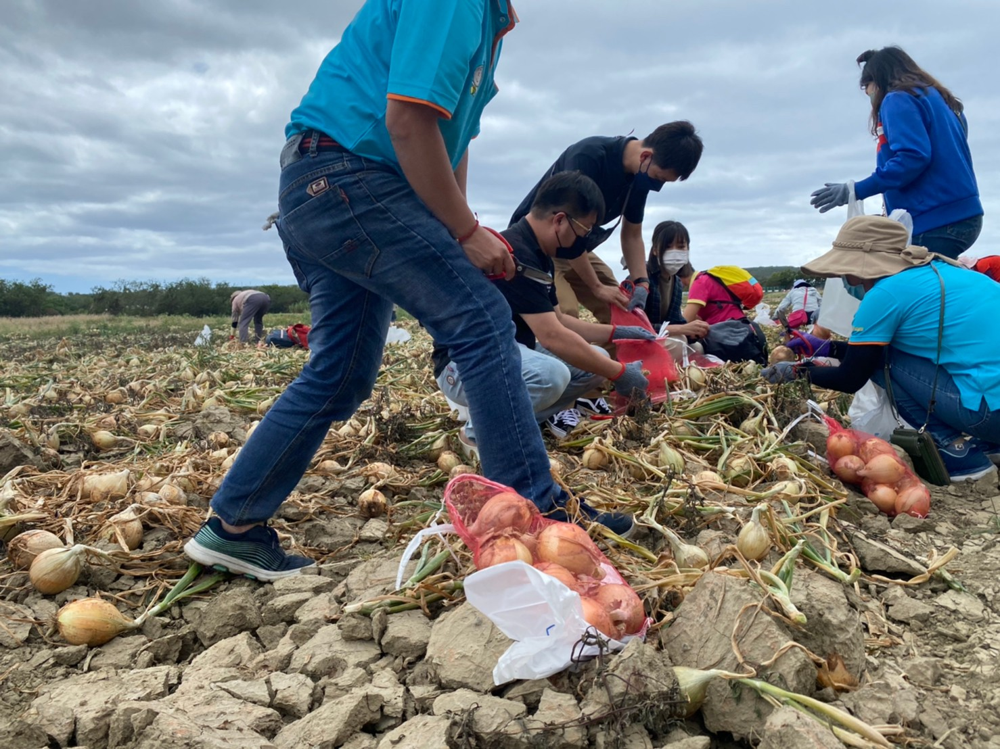
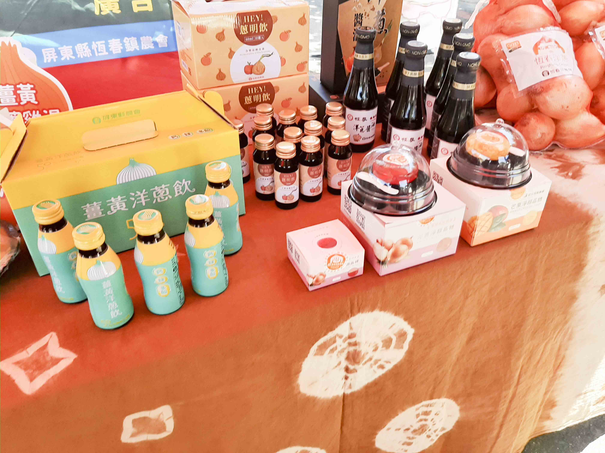

洋蔥產業導覽活動（圖／農糧署）

開發多元加工品增加附加價值（圖／農糧署）
111年期屏東地區洋蔥因雨害影響，產量減少4-5成，國內洋蔥價高，於不足供應國內需求下，聯盟成員大和果菜生產合作社為鞏固國外市場仍外銷日本市場20公噸。
由聯盟成員向農民收購生鮮洋蔥，行銷國內各通路市場7,200公噸。
策略聯盟成員因應市場新需求，加工生產剝皮洋蔥，提供不同通路需求及使用110年建置之洋蔥溫控發酵熟成設備製作黑洋蔥發酵熟成原汁，去化格外品及提升小球洋蔥附加價值。加工原料數量370公噸。
1.辦理2場次洋蔥食農教育種子培訓工作坊，各農會家政指導員及田媽媽們參加，內容包括洋蔥之營養及對健康的益處、國產與進口洋蔥之區別、利用與料理、選購及貯存洋蔥技巧、並實際操作洋蔥料理。
2.辦理3場次洋蔥產業導覽活動，引導消費者至洋蔥田，解說洋蔥生產過程，並體驗採收洋蔥，了解蔥農如何集貨、選別、包裝等，及製作洋蔥料理。
3.於雲林古坑及國道湖口休息站辦理2場次洋蔥及加工品產業輔導活動，行銷洋蔥及各項洋蔥加工產品，擴大消費量能。